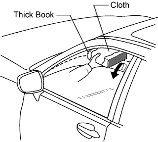

POWER WINDOW CONTROL SYSTEM > OPERATION CHECK |
| CHECK WINDOW LOCK SWITCH |
 |
Check that the front passenger side power window and the rear power windows cannot be operated when the window lock switch of the multiplex network master switch is pressed.
Check that the front passenger side power window and the rear power windows can be operated when the window lock switch is pressed again.
| CHECK MANUAL UP/DOWN FUNCTION |
Check that the driver side power window operates as follows:
| Condition | Multiplex Network Master Switch | Switch Operation | Power Window |
| Engine switch on (IG) | Driver side | Pulled halfway up | Up (Closes) |
| Pushed halfway down | Down (Opens) |
Check that the front passenger side and rear power windows operate as follows:
| Condition | Power Window Regulator Switch | Switch Operation | Power Window |
| Front passenger side | Pulled halfway up | Up (Closes) |
| Pushed halfway down | Down (Opens) | ||
| Rear LH side | Pulled halfway up | Up (Closes) | |
| Pushed halfway down | Down (Opens) | ||
| Rear RH side | Pulled halfway up | Up (Closes) | |
| Pushed halfway down | Down (Opens) |
| CHECK AUTO UP/DOWN FUNCTION |
Check that the driver side power window operates as follows:
| Condition | Multiplex Network Master Switch | Switch Operation | Power Window |
| Engine switch on (IG) | Driver side | Pulled up (One touch operation) | Auto up (Closes) |
| Pushed down (One touch operation) | Auto down (Opens) |
Check that the front passenger side and rear power windows operate as follows:
| Condition | Power Window Regulator Switch | Switch Operation | Power Window |
| Front passenger side | Pulled up (One touch operation) | Auto up (Closes) |
| Pushed down (One touch operation) | Auto down (Opens) | ||
| Rear LH side | Pulled up (One touch operation) | Auto up (Closes) | |
| Pushed down (One touch operation) | Auto down (Opens) | ||
| Rear RH side | Pulled up (One touch operation) | Auto up (Closes) | |
| Pushed down (One touch operation) | Auto down (Opens) |
| CHECK REMOTE MANUAL UP/DOWN FUNCTION |
Check that the front passenger side and rear power windows operate as follows:
| Condition | Multiplex Network Master Switch | Switch Operation | Power Window |
| Front passenger side | Pulled halfway up | Up (Closes) |
| Pushed halfway down | Down (Opens) | ||
| Rear LH side | Pulled halfway up | Up (Closes) | |
| Pushed halfway down | Down (Opens) | ||
| Rear RH side | Pulled halfway up | Up (Closes) | |
| Pushed halfway down | Down (Opens) |
| CHECK REMOTE AUTO UP/DOWN FUNCTION |
Check that the front passenger side and rear power windows operate as follows:
| Condition | Multiplex Network Master Switch | Switch Operation | Power Window |
| Front passenger side | Pulled up (One touch operation) | Auto up (Closes) |
| Pushed down (One touch operation) | Auto down (Opens) | ||
| Rear LH side | Pulled up (One touch operation) | Auto up (Closes) | |
| Pushed down (One touch operation) | Auto down (Opens) | ||
| Rear RH side | Pulled up (One touch operation) | Auto up (Closes) | |
| Pushed down (One touch operation) | Auto down (Opens) |
| CHECK POWER WINDOW OPERATION FUNCTION AFTER ENGINE SWITCH OFF |
Check that all the power windows can be operated with the multiplex network master switch after the engine switch is turned off.
Check that the key-off operation function does not operate after a front side door is opened.
Check that all the power windows cannot be operated after more than approximately 45 seconds have elapsed since the engine switch was turned off.
| CHECK TRANSMITTER-LINKED FUNCTION |
Check that all power windows operate as follows when operating the transmitter.
| Condition | Transmitter Operation | Power Window |
| No key is inside vehicle, and all doors are closed and locked. | Unlock switch pressed for more than 3.0 sec. | Down (Opens) |
| No key is inside vehicle, and all doors are closed and locked. | Unlock switch released. | Stop |
| CHECK KEY-LINKED FUNCTION USING DRIVER SIDE DOOR KEY CYLINDER |
Check that all power windows operate as follows.
| Condition | Door Key Cylinder Operation | Power Window |
| No key is inside vehicle, and all doors are closed. | Turned to lock for more than 2.3 sec. | Up (Closes) |
| No key is inside vehicle, and all doors are closed. | Returned to neutral position. | Stop |
| No key is inside vehicle, and all doors are closed. | Turned to unlock for more than 2.3 sec. | Down (Opens) |
| No key is inside vehicle, and all doors are closed. | Returned to neutral position. | Stop |
| CHECK AUTO UP FUNCTION USING ENTRY LOCK SWITCH |
Check that all power windows operate as follows when the entry lock switch is pressed and held.
| Condition | Switch Operation | Power Window |
| No key is inside vehicle, and all doors are closed. | Entry lock switch pressed for more than 3.0 sec. | Up (Closes) |
| No key is inside vehicle, and all doors are closed. | Entry lock switch released. | Stop |
| CHECK JAM PROTECTION FUNCTION |
Check the basic function.
Fully open the window.
 |
Hold a thick book wrapped with cloth in the position shown in the illustration.
Operate the auto up or manual up function to check that the power window goes down when the window contacts the book, and stops when the opening reaches approximately 200 mm (7.87 in.).
While the power window is moving down, check that the door glass cannot be moved up even when the power window regulator switch is used.
| CHECK POWER WINDOW REGULATOR SWITCH LED ILLUMINATION |
Check the LED illumination.
Check that the LED located on the power window regulator switch illuminates when the engine switch is on (IG) and the window lock switch is off.